GLICD
Ouvrir un document PDF avec l'application Visionneur de documents Atril :
Visiter sur la toile Atril
Atril est un visionneur simple de documents multipages. Il peut afficher et imprimer les fichiers
PDF et d'autres...
Atril permet aussi, lorsque le document le prend en charge, de rechercher du texte, de le copier dans le presse-papier,
de suivre les hyperliens et de gérer les marque-pages.
Paquet/atril
Le visionneur de documents Atril est installé par défaut sur Debian avec le bureau Xfce.
- Ouvrir l'application visionneur de documents Atril :
Simple clic > Applications > Bureautique > visionneur de documents Atril
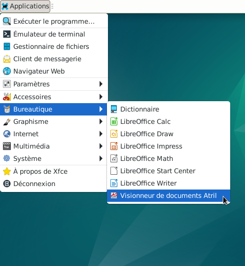
- L'application s'ouvre « Atril Document viewer »
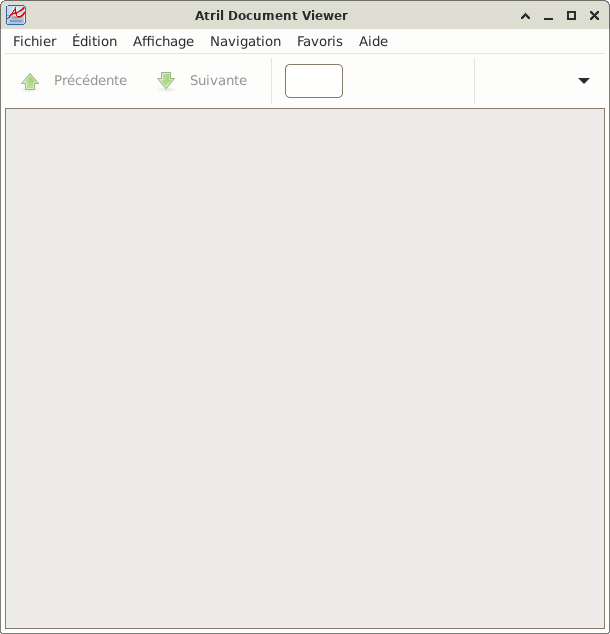
- Dans cet exemple le fichier à visionner « MEMOdoc.pdf » se trouve dans :
Debian > Téléchargements
- Simple clic > Fichiers > Ouvrir
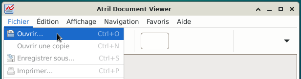
- Une fenêtre s'ouvre
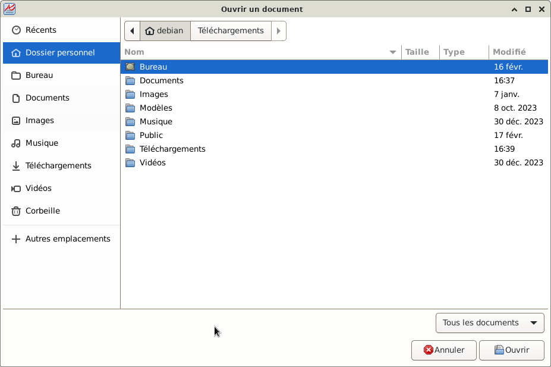
- Se rendre dans le dossier ou se trouve le document PDF
Ici : Debian > Téléchargements
Double clic sur le document à visionner, ici « MEMOdoc.pdf »
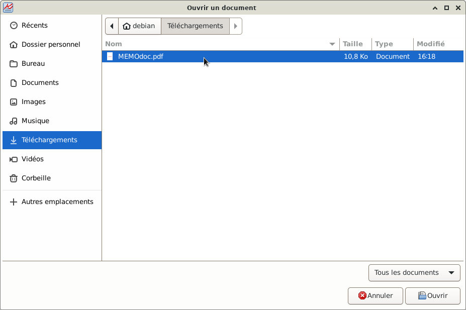
- Le visionneur de documents Atril s'ouvre en visualisant le dossier
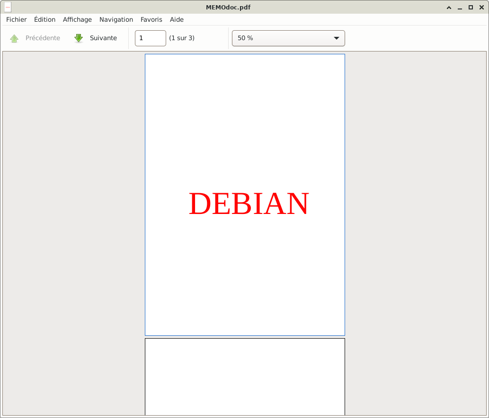
- Plusieurs indications peuvent être lues
- Le nom du fichier : « MEMOdoc.pdf »
- Indique la page qui est visualisée : ici la page « 1 » et le nombre de page : ici, 3 pages (1 sur 3)
- La visualisation est de « 50 % », il est possible de l'agrandir : Simple clic sur l'onglet,
une liste déroulante apparaît avec le choix d'agrandir ou d'ajuster la page avec un simple clic.
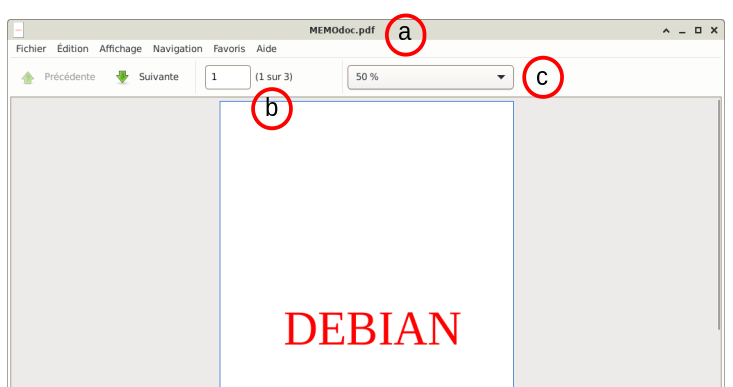
- Simple clic > Edition :
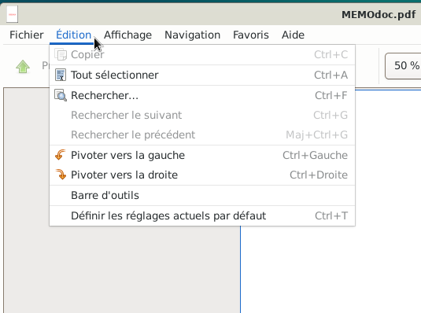
- Simple clic > Rechercher
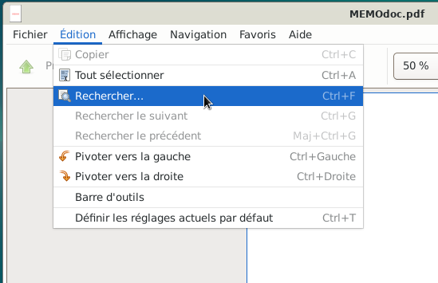
- Un bandeau de dialogue s'ouvre en bas de la fenêtre
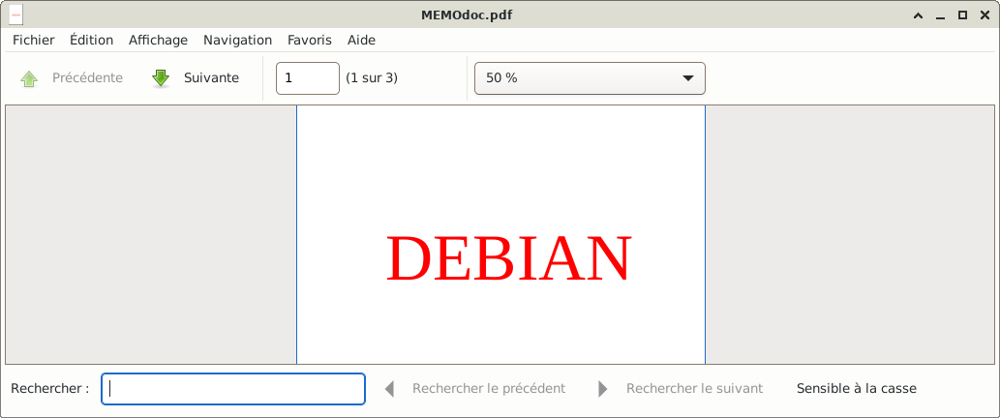
- Dans la zone « Rechercher » commencer à saisir un mot. Les pages vont défiler au fur et à
mesure de la saisie totale du mot.
Dans cet exemple la lettre « v » a été saisie et la page avec le mot commençant par « v » s'est affichée.
Nota : Tous les documents ne permettent pas cette recherche.
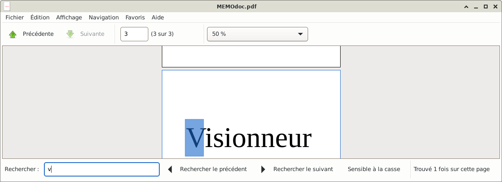
- Pour fermer ce bandeau de dialogue, simple clic en dehors du bandeau dans la partie grisée.
- Toujours dans « Edition » il est possible de :
Pivoter le document vers la gauche ou vers la droite
Simple clic > Barre d'outils
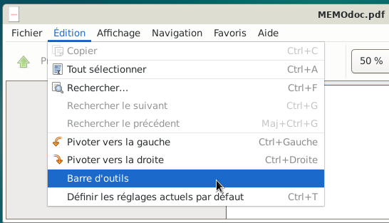
- Une fenêtre s'ouvre avec la description des différentes icônes.
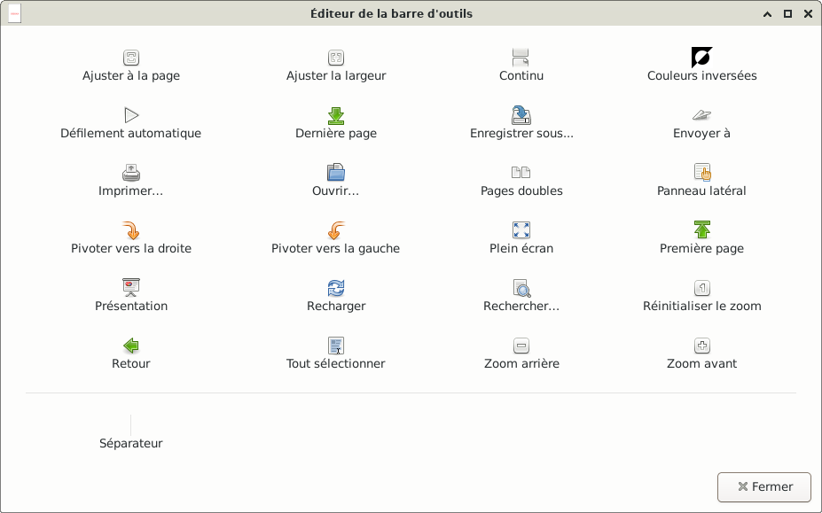
- Fermer cette fenêtre, simple clic > Fermer
- Simple clic > Affichage
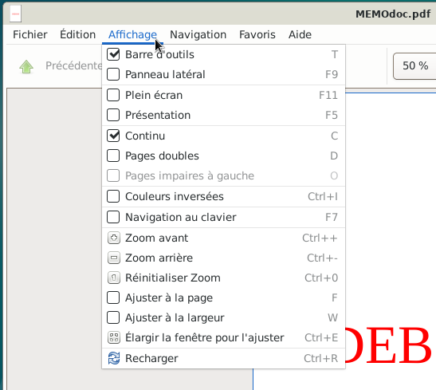
- Les cases cochées sont les options sélectionnées
Simple clic > Panneau latéral
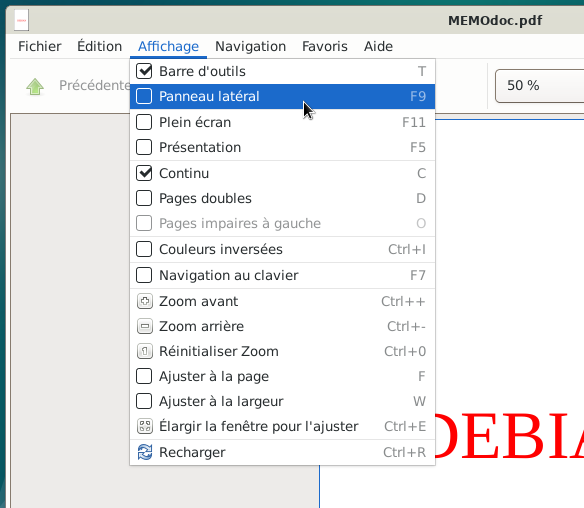
- Toutes les pages du document apparaissent sur le côté de l'application.
La page qui est encadrée en bleu est la page qui est affichée.
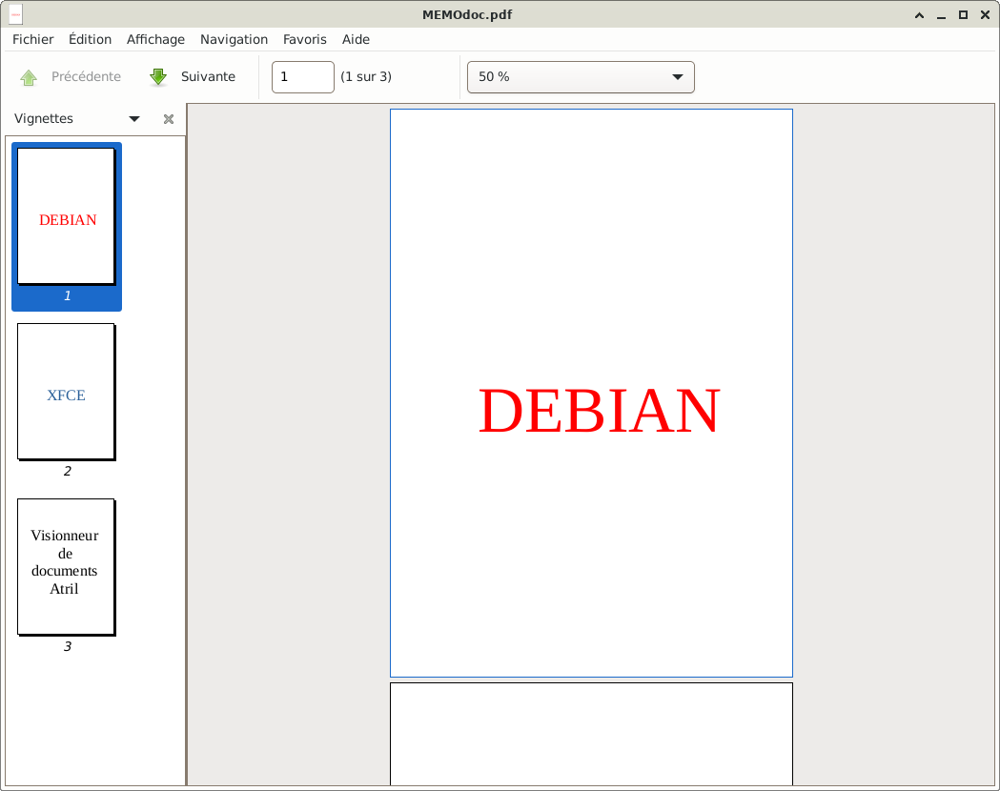
- Si toutes les pages ne se trouvent pas dans le bandeau latéral :
Positionner le pointeur de la souris dans le bandeau latéral
Puis à l'aide de la molette de la souris faire défiler les pages du documents.
Ensuite un simple clic sur la page à visionner
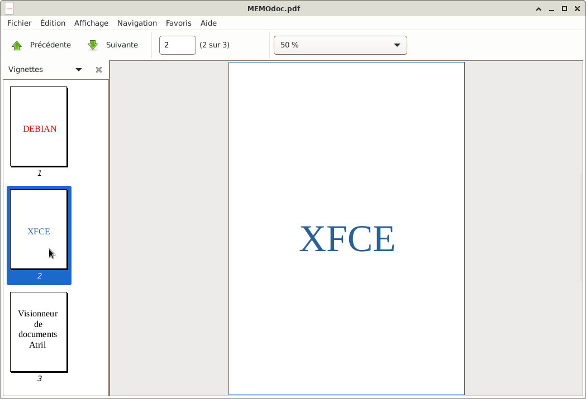
- Pour visionner les différentes pages, il est aussi possible de :
Positionner le pointeur de la souris dans la zone principale
Puis à l'aide de la molette de la souris faire défiler les pages du document.
Ca fonctionne aussi avec les touches de déplacement du clavier (flèches directionnelles).
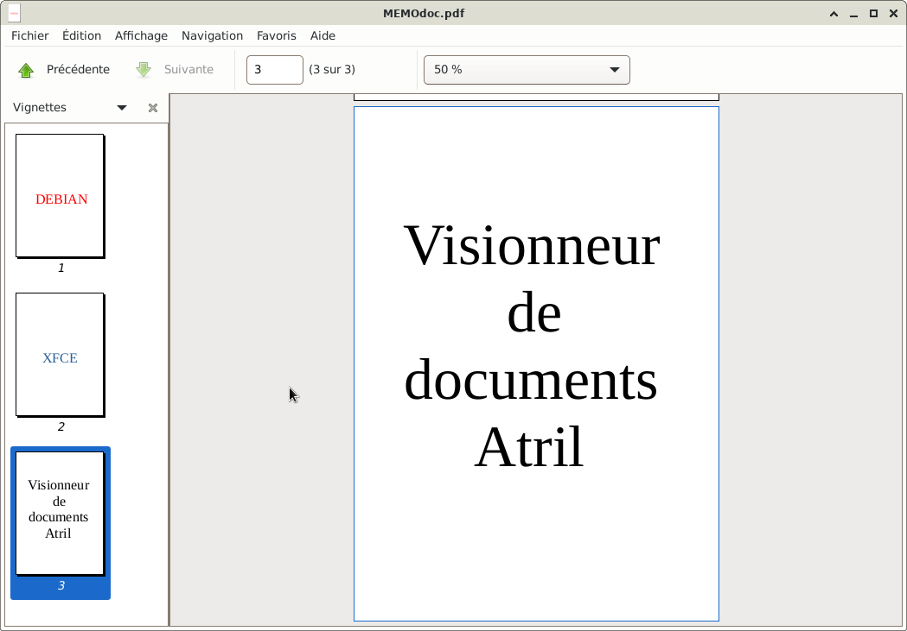
- Pour visionner une page à la fois, il est possible d'utiliser les flèches de la barre d'outils :
Simple clic > Précédente ou Suivante (si l'un ou l'autre des boutons n'est pas grisé).
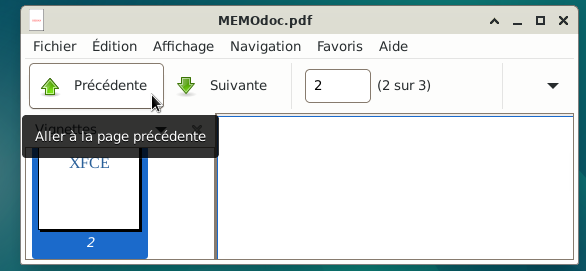
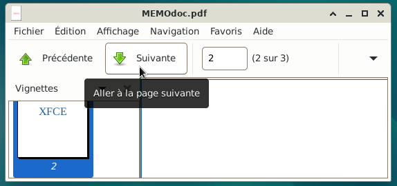
- Saisir directement le numéro de la page à laquelle se rendre
A l'aide du clavier, saisir par exemple « 1 » pour se rendre à la page 1 puis valider avec la touche « Entrée »
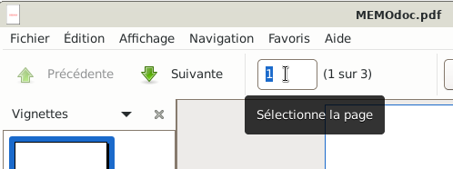
- Simple clic > Navigation
Simple clic > Première page, Dernière page, Page précédente, Page suivante
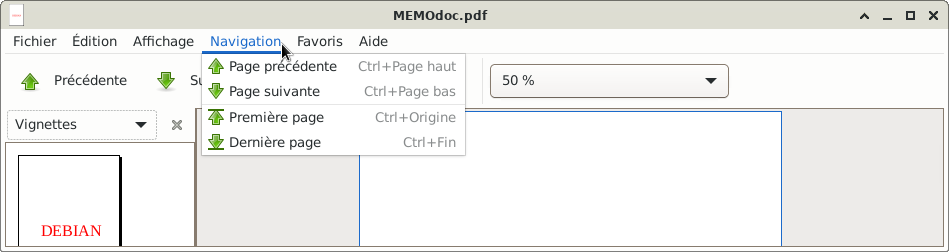
- Enregistrer le document
Simple clic > Fichier
Simple clic > Enregistrer sous..., la boite de dialogue d'enregistrement va s'ouvrir.
Enregistrer le document à l'endroit souhaité
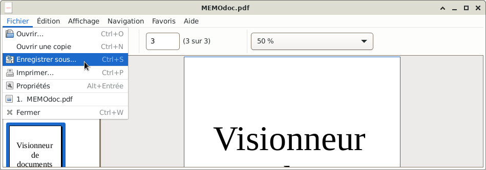
- Imprimer le document
Simple clic > Fichier
Simple clic > Imprimer, la boite de dialogue de l'impression va s'ouvrir.
Si besoin, se rendre au chapitre Imprimante : Paramètres d'impressions avec la
boite de dialogue
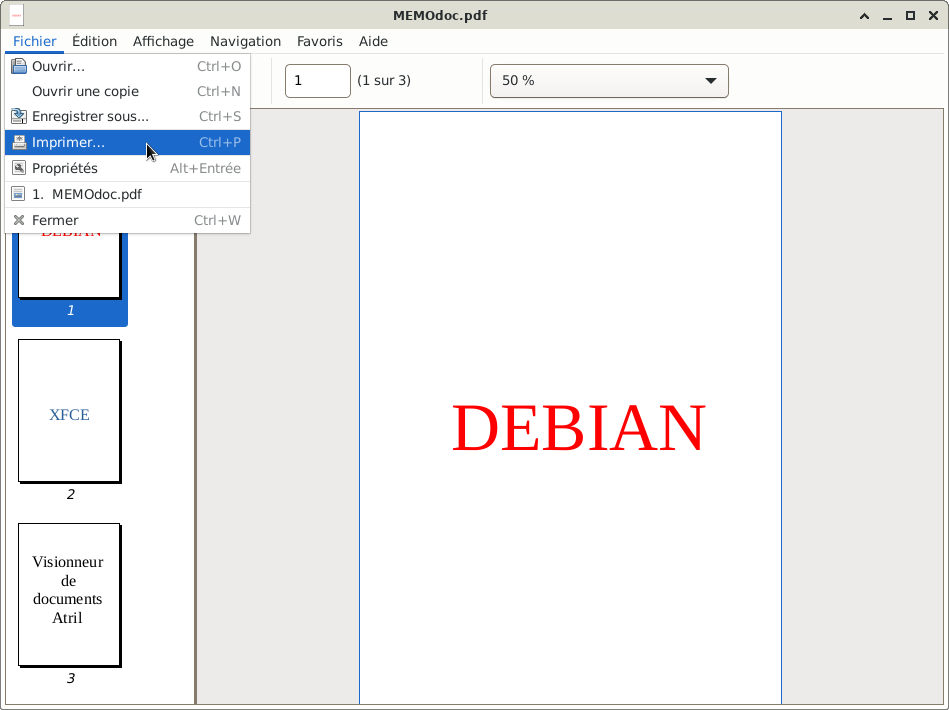
- Fermer l'application Atril
Simple clic > Fichier > fermer
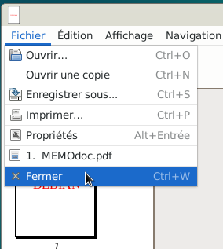
Pour plus d'information, se rendre sur la
doc.Ubuntu
qui traite de la gestion des fichiers de type PDF.

Retour
Informations sur le logiciel libre et
Merci.
Marques déposées :
Ce site ne fait pas partie de Debian, n'est pas produit par le projet
Debian, ni approuvé par le projet Debian.
Ce site n'est pas affilié à Debian. Debian est une marque déposée appartenant
à Software in the Public Interest, Inc.
Contribuer :
Ce site ne fait pas partie de XFCE, n'est pas produit par le projet
XFCE, ni approuvé par le projet XFCE.
Ce site n'est pas affilié à XFCE.
Ce site est juste réalisé par un passionné.